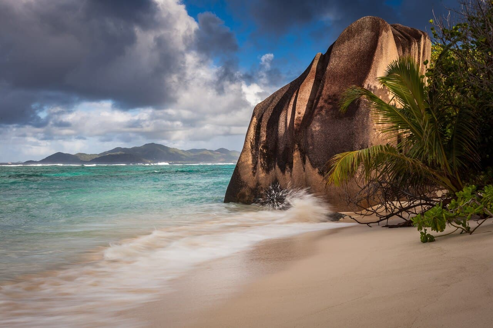

Anse Source d'Argent
La Digue, Seychelles · baignade, snorkeling, paddle

Plage iconique aux blocs de granit rose et lagon peu profond protégé par le récif : baignade et snorkeling de carte postale.
- Lieu
- La Digue, Seychelles
- Niveau
- Débutant
- Activités
- baignade, snorkeling, paddle
- Type d'eau
- Mer / océan
- Coordonnées
- -4.38, 55.83 (position approximative du secteur)
Dangers à connaître
- Récif proche : attention aux coraux.
- Soleil équatorial très fort.
Le conseil d'Ocean Buddy
Marée haute pour mieux nager au-dessus du lagon.
Ouvrir dans Ocean Buddy Télécharger sur l'App Store
Source : Description historique Ocean Buddy · vérification externe en attente.